Manos en Barro
Barro, pigmentos y fuego. La obra de José María Lovera, hecha a mano en Córdoba y con fines benéficos.
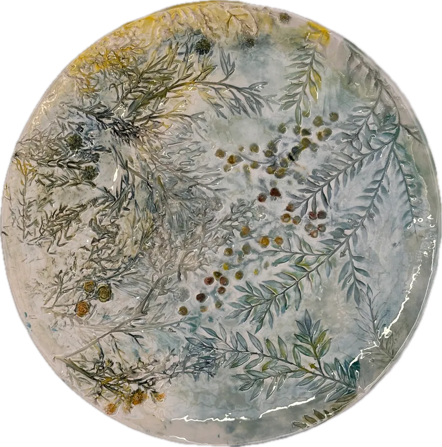
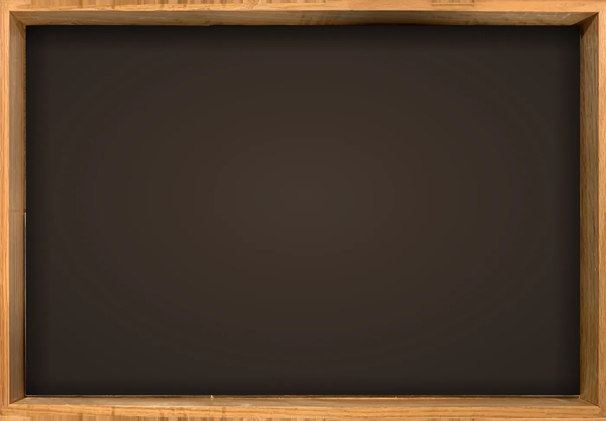
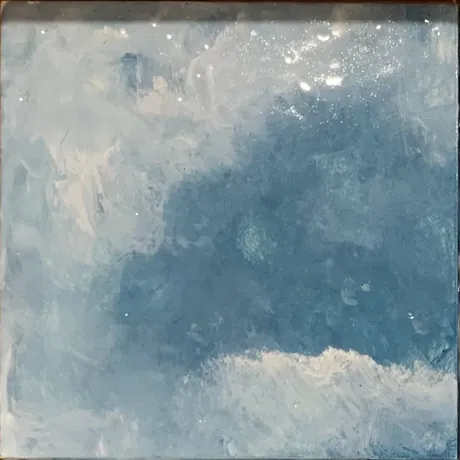
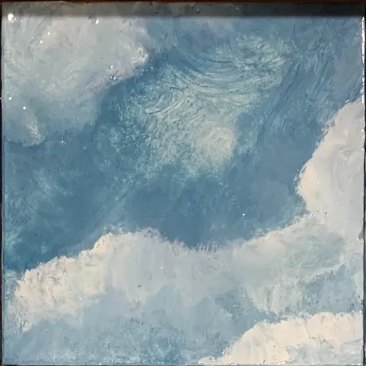
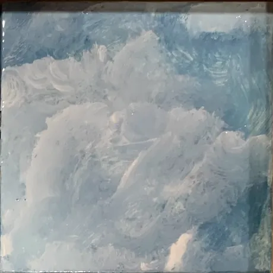
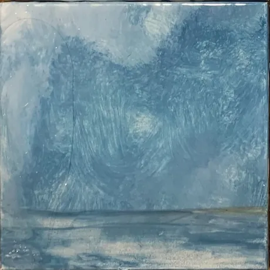
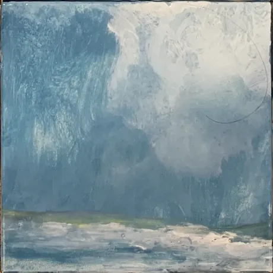
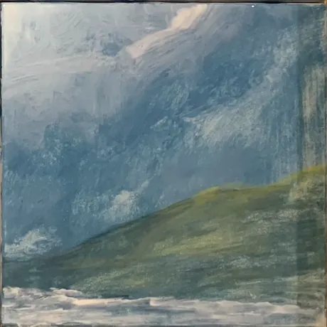
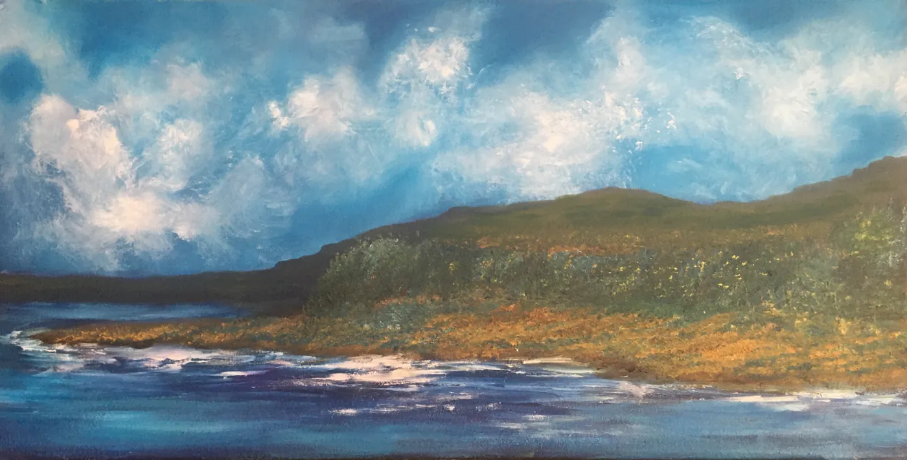
«Manos, barro, agua, fuego y naturaleza. La naturaleza te lo da todo.»
La obra
Tres caminos, las mismas manos
 CerámicaPlatos, fuentes, jarrones, hojas y flores modelados a mano, con la huella de la naturaleza.Ver cerámica
CerámicaPlatos, fuentes, jarrones, hojas y flores modelados a mano, con la huella de la naturaleza.Ver cerámica  PinturaPaisajes que invitan a caminar dentro de ellos: bosques, agua, cielos y flores.Ver pintura
PinturaPaisajes que invitan a caminar dentro de ellos: bosques, agua, cielos y flores.Ver pintura  Pintura sobre cerámicaPaneles de azulejos pintados como cuadros, que pasan por el fuego y resisten al tiempo.Ver pintura sobre cerámica
Pintura sobre cerámicaPaneles de azulejos pintados como cuadros, que pasan por el fuego y resisten al tiempo.Ver pintura sobre cerámica
La exposición
Una muestra de su cerámica


El proceso
Del barro al fuego
Sin tornos ni máquinas: solo las manos, un rodillo y lo que da el campo. Hojas, espigas y flores dejan su huella en el barro tierno antes de pasar por el fuego.
Desliza la imagen para ver la pieza antes y después.
Cómo se hace una pieza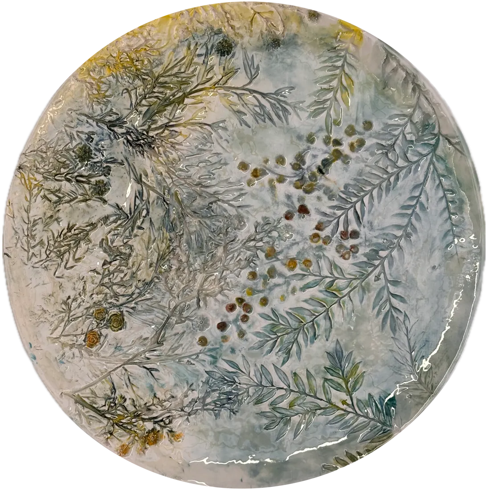
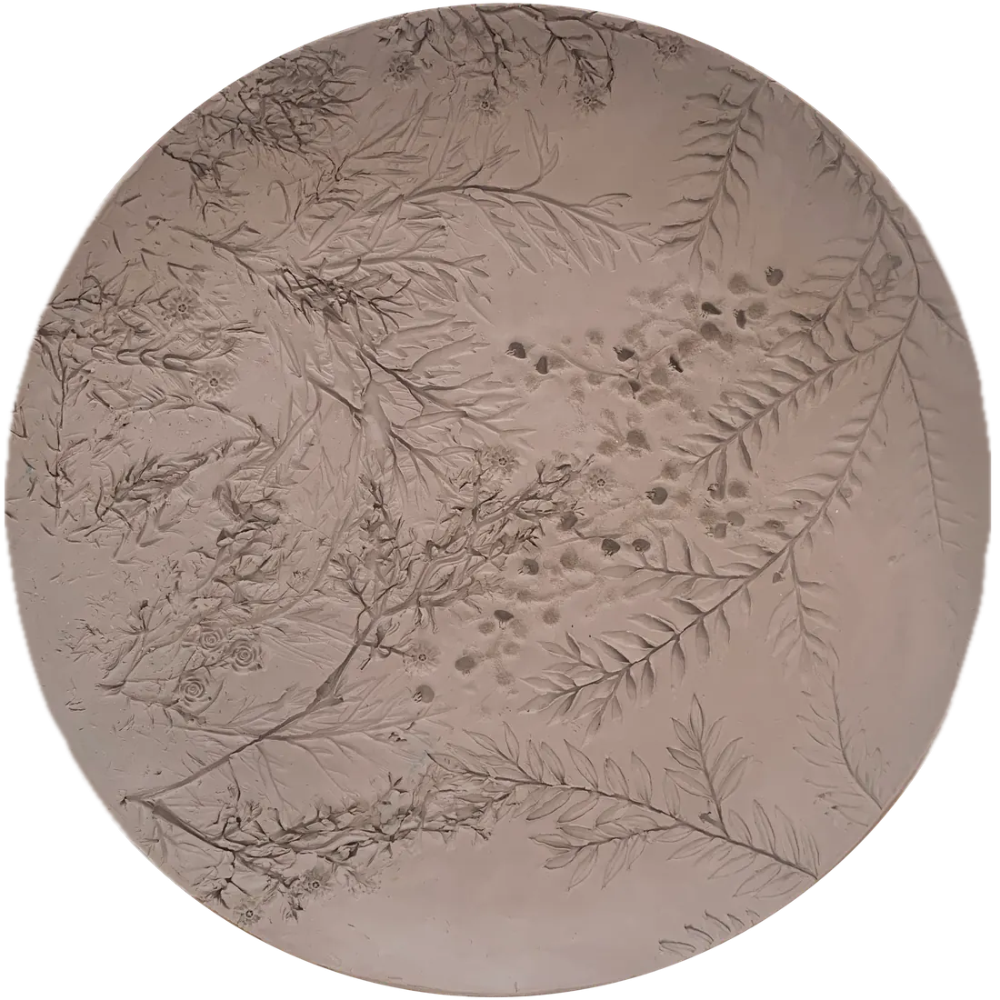
Con fines benéficos
Cada pieza ayuda a otras manos
José María no obtiene ningún beneficio con su obra. Todo lo que se recauda con la venta de cerámica, cuadros y libros se dona a dos organizaciones.
100 %de lo recaudado
se dona
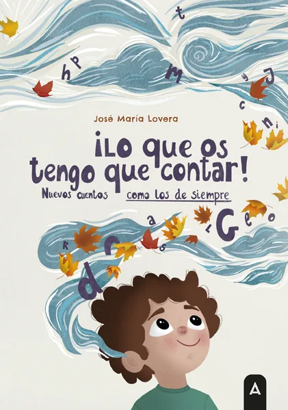
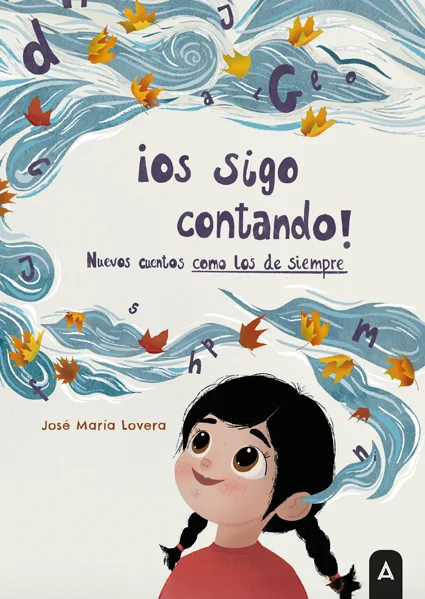
Cuentos
Cuentos como los de siempre
José María también escribe. Sus dos libros de cuentos infantiles, ilustrados en familia, están pensados para leer en voz alta y para que hijos y padres hablen después de lo que pasa en ellos.
Conocer los cuentos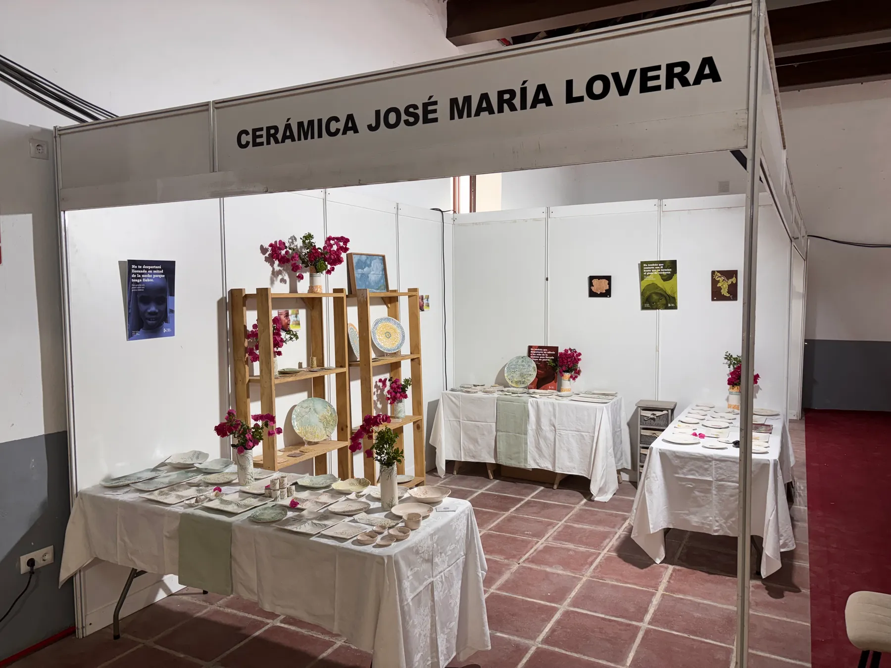
Dónde encontrarle
En los mercadillos de Córdoba
Busca su puesto para ver las piezas de cerca, tocarlas y llevártelas a casa. Las fechas van cambiando: pregúntale cuándo es el próximo.
Mercadillo de La RamblaEn La Rambla, el pueblo alfarero de la campiña cordobesa, donde se celebran los mercados de cerámica. Ver en Google Maps Mercadillo de San HipólitoJunto a la iglesia de San Hipólito, en el centro de Córdoba. Ver en Google Maps